R. Martínez
Polytechnical University, Madrid
raquelm@etsii.upm.es
-
J. Llovet, B. Castaño
University of Alcalá, Madrid
illovet@alcala.es,mtcastano@alcala.es
In this paper we show the application of a new type of abstract
data structure, the straight-line program (SLP), to the computation
of the greatest common divisor of multivariate polynomials. This data
structure allows an alternative treatment of algebraic objects
and algorithms. The set of developed procedures appears as
a new way to compute the system of orthogonal polynomials
associated with a linear recurring sequence (lrs). When the linear
recurring sequence is computed from two multivariate
polynomials, the last polynomial of the system is closely
related to the greatest common divisor of the given
polynomials.
The objective of the SLP structure is to minimize the number of arithmetic operations in parallel as well as the number of total operations. >From a theoretical point of view a Straight-Line Program S, over D (integral domain), is a computation sequence
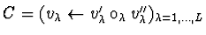
with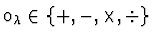
and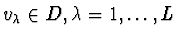
(L is the length of S). This sequence C computes some results from a set of input values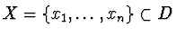
. The representation and formal treatment of straight-line programs could be achieved by means of an abstract data structure that is able to support the inputs and the operations to obtain the elements of the computation sequence C. An arithmetic circuit, represented by a directed acyclic graph, could be a valid structure to represent a SLP.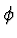
over Q(D)[z] subordinate by the linear recurring sequence d =(d1)i=1..2n-1, with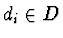
. Through the p-primary vectors X={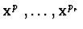
} of the sequence d it is possible to construct a polynomial system Q={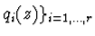
, that satisfies some orthogonal properties respect to symmetric bilinear form over Q(D)[z] , such that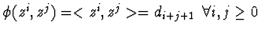
=d_{i+j+1} \, \, \, \forall i,j \geq 0 $">. The polynomials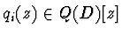
, for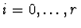
, are computed as: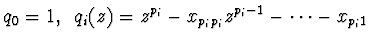
. The greatest common divisor is determined using division between the last polynomial qr(z) and one of the gree polynomial given(maximum degree).
The first stage concerns representing the 2n-1 first entries of a lrs
by a SLP implemented by an arithmetic circuit with 2n-1 output nodes.
In the second stage, we build a directed acyclic graph that codifies the algorithm for
computing the primary vectors associated with the linear
recurring sequence d. The input nodes of this circuit are
the 2n-1 output nodes of the arithmetic circuit built on the first stage.
The complete data structure represents the set of primary vectors of the given linear
recurring sequence, and considers every possible case that could appear.
If a specific linear recurring sequence is explicitly defined then only the
corresponding parts of the arithmetic circuit are evaluated.